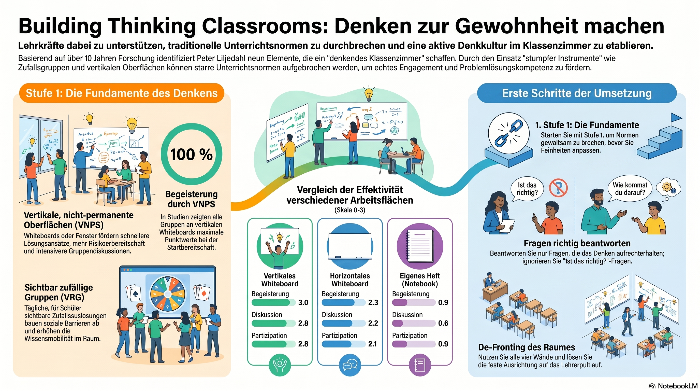

Bringen Sie Ihre Klasse zum Denken
Peter Liljedahls Forschung zeigt: Ob eine Klasse denkt, hängt weniger an den Köpfen der Schülerinnen und Schüler als am Setting, das wir ihnen geben. Diese Handreichung führt Sie durch die drei wirksamsten Sofort-Maßnahmen – gute Aufgaben, sichtbar zufällige Gruppen und vertikale Whiteboards – mit denen Sie schon morgen beginnen können.
Denken zur Gewohnheit machen
Die Fundamente des Denkens und die ersten Schritte der Umsetzung – als Infografik.

Video-Überblick: „Denkende Klassenzimmer" – worum es geht und wie der Einstieg gelingt.
Warum „denkendes Klassenzimmer"?
Liljedahls Arbeit beginnt mit einer ernüchternden Beobachtung. Über zehn Jahre besuchte er mehr als 40 Mathematikklassen und sah fast überall dasselbe: Schülerinnen und Schüler, die nicht denken – und einen Unterricht, der stillschweigend davon ausgeht, dass sie es auch nicht könnten oder wollten. Er nennt das ein nicht-denkendes Klassenzimmer: Die Lehrkraft rechnet Beispiele vor, die Klasse kopiert und „übt" sie nach, echtes Problemlösen findet nicht statt.
Der entscheidende Befund: Schuld daran sind nicht faule Schüler, sondern tief verankerte Unterrichtsnormen. Sie sind so robust, dass selbst engagierte Lehrkräfte sie mit guten Aufgaben allein nicht durchbrechen – die neue Aufgabe wird einfach durch die alte Routine gefiltert. Liljedahl suchte deshalb gezielt nach „stumpfen Instrumenten": einfachen Maßnahmen, die diese Normen umgehen und an ihre Stelle eine Kultur des Denkens setzen. Ein denkendes Klassenzimmer ist für ihn ein Raum, der Denken nicht nur zulässt, sondern herausfordert – in dem gemeinsam gerungen, diskutiert und Wissen aktiv konstruiert wird.
Die Kernidee: Beteiligung und Denken sind keine Frage der Motivation einzelner Kinder, sondern eine Frage des Settings. Ändern Sie das Setting, ändert sich das Verhalten der ganzen Klasse – und zwar schnell.
Die drei Stufen – und wo Sie anfangen
Aus der Forschung an neun Unterrichtselementen ergab sich eine Reihenfolge der Einführung. Nicht alle Maßnahmen wirken gleich stark: Manche sind „stumpfe Instrumente", die sofort viel bewegen; andere sind feine Werkzeuge zur Pflege eines bereits denkenden Klassenzimmers. Die folgende Übersicht zeigt die ideale Chronologie – und macht deutlich, warum diese Handreichung bei Stufe 1 ansetzt.
Fundamente legen
Gute Problemlöse-Aufgaben, sichtbar zufällige Gruppen, vertikale Whiteboards. Wirken sofort und in jeder Klassenstufe – hier beginnen Sie.
Routinen schärfen
Mündliche Aufgabenstellung, „De-Fronting" des Raumes, Fragen richtig beantworten – sobald Stufe 1 sitzt.
Denken erhalten
Hinweise & Erweiterungen im „Flow", Niveauangleichung „von unten", lernprozessorientierte Bewertung.
Baustein 1Gute Aufgaben – Stoff zum Denken
Worüber soll die Klasse überhaupt nachdenken?
Ein denkendes Klassenzimmer braucht etwas zum Nachdenken. In Mathematik ist das eine Problemlöse-Aufgabe – nicht die nächste Übungsaufgabe nach dem Muster, sondern eine, deren Lösungsweg nicht von vornherein feststeht. Beginnen Sie die Stunde damit, nicht mit dem Lehrervortrag.
Gerade am Anfang, wenn das Setting noch neu ist, gilt: Die ersten Aufgaben sollten hoch motivierend und ausgesprochen kollaborativ sein – Aufgaben, bei denen die Schülerinnen und Schüler von sich aus miteinander reden wollen. Liljedahl nutzte dafür anfangs bewusst „kuriose" Aufgaben (Kartentricks, Würfel- und Knobelaufgaben), die noch wenig mit dem Lehrplan zu tun haben, aber das Mitdenken in Gang setzen. Ist das denkende Klassenzimmer einmal etabliert, wandern die Aufgaben in den Lehrplanstoff: Dann durchzieht das Problemlösen die ganze Stunde und bringt genau die Mathematik hervor, die ohnehin „dran" ist.
Merkregel: Erst Aufgaben, die das Denken anwerfen – dann Aufgaben, die den Stoff tragen. Eine gute Aufgabe hat mehrere Zugänge und lässt sich nicht in einem Schritt „wegrechnen".
Baustein 2Sichtbar zufällige Gruppen (VRG)
Wer arbeitet mit wem – und warum entscheidet das so viel?
Üblich sind zwei Wege, Gruppen zu bilden: Die Lehrkraft teilt strategisch ein, oder die Klasse sucht sich selbst zusammen. Beides hat ein Problem. Strategische Einteilungen verfolgen pädagogische Ziele, die sozialen Ziele der Lernenden bleiben dabei auf der Strecke; selbstgewählte Gruppen kehren das um. Beide Male entsteht Reibung, und die Wirksamkeit der Gruppenarbeit sinkt.
Liljedahls Lösung ist verblüffend einfach – aber mit einer entscheidenden Bedingung. Die Gruppen werden zufällig gebildet, und zwar sichtbar zufällig (englisch visibly random groups, VRG). Geschieht die Zuteilung verdeckt, vermutet die Klasse einen Hintergedanken und ändert ihr Verhalten nicht. Wird dagegen vor aller Augen gelost – per App wie Teamshake, mit Spielkarten oder gezogenen Namen – kippt etwas: Wenn der Zufall sichtbar entscheidet, ist niemand selbst „schuld" an seiner Gruppe, und die Bereitschaft, mit jedem zu arbeiten, steigt.
Entscheidend ist die Häufigkeit: in der Sekundarstufe jede Stunde neu, Gruppen zu zwei bis vier (drei ist der praktische Idealwert). Liljedahl beobachtete, dass sich das Klassenklima dann schon binnen zwei bis drei Wochen sichtbar verändert:
- Die Lernenden arbeiten bereitwillig in jeder Gruppe mit, in die sie kommen.
- Soziale Barrieren in der Klasse lösen sich auf.
- Wissen wandert – zwischen den Mitgliedern und zwischen den Gruppen.
- Die Abhängigkeit von der Lehrkraft als alleiniger „Wissensquelle" sinkt.
- Engagement und Begeisterung für den Mathematikunterricht steigen.
Praxis-Hinweis: Lassen Sie das Losen wirklich sichtbar geschehen und ziehen Sie es konsequent durch. Schon ein einziges „heimliches" Steuern untergräbt den Vertrauenseffekt, auf dem die ganze Wirkung beruht.
Baustein 3Vertikale nicht-permanente Oberflächen (VNPS)
Wo arbeitet die Gruppe – und warum im Stehen an der Wand?
Der zweite große Hebel ist der Arbeitsort. Statt sitzend ins eigene Heft arbeiten die Gruppen im Stehen an senkrechten, abwischbaren Flächen – Whiteboards, Tafeln, notfalls Fenster oder glatte Wände. Liljedahl nennt sie vertikale nicht-permanente Oberflächen (englisch vertical non-permanent surfaces, VNPS). Zwei Eigenschaften wirken zusammen:
Vertikal heißt: Es gibt kein Verstecken. Wer steht, ist sichtbar – für die Lehrkraft und für die eigene Gruppe. Im Sitzen kann man sich anonym machen und zurückziehen, sobald es schwierig wird; im Stehen heißt Zurückziehen, einen Schritt ins Leere zu tun. Genau diese Sichtbarkeit hält alle im Spiel.
Nicht-permanent heißt: Alles ist sofort wieder abwischbar. Das senkt die Hemmschwelle, etwas Unfertiges hinzuschreiben – in Mathematik der größte Beteiligungskiller ist die Angst vor dem sichtbaren Fehler. An einer abwischbaren Fläche „riskieren Schüler mehr und früher". Geben Sie pro Gruppe bewusst nur einen Stift aus: So entsteht echte Aushandlung statt drei paralleler Privathefte.
Liljedahls Daten zeigen, warum diese Kombination so viel bewegt – die Gruppen an vertikalen Whiteboards schnitten auf allen Messgrößen am besten ab:
- Schnellerer Start – an Whiteboards wird deutlich früher die erste Rechnung notiert als auf (permanentem) Papier.
- Mehr Diskussion und Beteiligung – alle Wege sind gleichzeitig sichtbar, das produktive „Ach, so geht das auch" entsteht von selbst.
- Mehr Ausdauer und nicht-lineares Arbeiten – der Lösungsweg „wandert" über die Fläche, so wie echtes Problemlösen verläuft.
- Wissensmobilität – stehende Gruppen schauen bei den Nachbarn ab und voneinander ab; aus einzelnen denkenden Gruppen wird ein denkendes Klassenzimmer.
Die Evidenz: der Flächenvergleich
Die Empfehlung für vertikale Whiteboards ist kein Geschmacksurteil. Liljedahl ließ Gruppen an fünf verschiedenen Arbeitsflächen dieselbe Art Aufgabe lösen und bewertete sie über „Proxys für Engagement" – beobachtbare Verhaltensweisen wie Begeisterung beim Start, Diskussion und Beteiligung (Skala 0–3). Das Ergebnis ist eindeutig: je sichtbarer und abwischbarer die Fläche, desto mehr Denkverhalten.
| Arbeitsfläche | Begeisterung | Diskussion | Beteiligung | Zeit bis 1. Notation |
|---|---|---|---|---|
| Vertikales Whiteboard | 3.0 | 2.8 | 2.8 | 20 s |
| Horizontales Whiteboard | 2.3 | 2.2 | 2.1 | 24 s |
| Vertikales Papier (Flipchart) | 1.2 | 1.5 | 1.8 | 2,4 min |
| Horizontales Papier | 1.0 | 1.1 | 1.6 | 2,1 min |
| Eigenes Heft | 0.9 | 0.6 | 0.9 | 18 s |
Besonders aufschlussreich ist die Zeit bis zur ersten mathematischen Notation: An Whiteboards (abwischbar) wird nach rund 20 Sekunden etwas hingeschrieben, auf Flipchart-Papier (permanent) erst nach über zwei Minuten. Die Lernenden zögern, etwas dauerhaft festzuhalten, das sich später als falsch herausstellen könnte. Die Abwischbarkeit senkt also die Risikoschwelle, die Senkrechte verhindert das Abtauchen – und beide zusammen ergeben den Spitzenwert.
Bemerkenswert für den Berufsalltag: Von 300 begleiteten Lehrkräften setzten rund 98 % die VNPS auch nach sechs Wochen noch ein – über alle Schulstufen hinweg. Eine Methode, die sich nach einer einzigen Fortbildung so hartnäckig hält, ist in der Forschung zur Lehrerfortbildung außergewöhnlich.
Erste Schritte: Raum entfronten & Fragen richtig beantworten
Zwei weitere Maßnahmen aus Stufe 2 lassen sich so leicht mitnehmen, dass sie den Einstieg enorm stützen – die Infografik weist eigens auf sie hin.
Den Raum „de-fronten"
Geben Sie die eine „Vorderwand" auf, auf die alle Tische ausgerichtet sind. Sprechen Sie von wechselnden Stellen aus, nutzen Sie möglichst alle vier Wände, stellen Sie die Tische bewusst ungeordnet. So verliert der Raum seine Botschaft „vorne wird gelehrt, hinten wird konsumiert".
Fragen richtig beantworten
Lernende stellen drei Arten von Fragen: Nähe-Fragen (nur weil Sie gerade da sind), Denk-Stopp-Fragen („Ist das richtig?") und Denk-weiter-Fragen. Beantworten Sie nur die dritte Art. Die ersten beiden freundlich anerkennen – aber nicht auflösen, sonst nehmen Sie der Klasse das Denken ab.
Beide Maßnahmen kosten nichts und brauchen kein Material – sie verlangen nur, eine Gewohnheit bewusst zu durchbrechen. Genau das ist der Geist des denkenden Klassenzimmers im Kleinen.
Eine erste Stunde – ganz konkret
So könnte Ihr Einstieg aussehen, ohne Vorbereitung von Spezialmaterial – mit dem, was die meisten Räume hergeben.
| Phase | Was Sie tun | Wozu |
|---|---|---|
| Gruppen | Vor der Klasse sichtbar Dreiergruppen losen (Karten/App) | Soziale Barrieren ausschalten, Mitarbeit in jeder Gruppe |
| Flächen | Jede Gruppe an ein Whiteboard / eine Tafel / ein Fenster, ein Stift | Sichtbarkeit, niedrige Risikoschwelle, echte Aushandlung |
| Aufgabe | Eine offene, kollaborative Problemaufgabe stellen (mündlich) | Denken anwerfen statt Instruktion dekodieren |
| Arbeit | Herumgehen, nur Denk-weiter-Fragen beantworten | Denken bei den Lernenden lassen |
| Sicherung | Niveau „von unten" angleichen, gemeinsam formalisieren | Alle abholen, Ergebnis kanonisieren |
Bei der mündlichen Aufgabenstellung diskutiert die Gruppe sofort, was gefragt ist, statt einen Aufgabenzettel zu entziffern. Und die Niveauangleichung „von unten" bedeutet: Erst wenn jede Gruppe eine Mindestschwelle erreicht hat, ziehen Sie das gemeinsame Ergebnis heraus – nicht orientiert an den drei Schnellsten.
Häufige Sorgen beim Einstieg
Ein paar ehrliche Antworten auf die Fragen, die fast jede Lehrkraft vor dem ersten Versuch umtreiben – zum Aufklappen.
„Ich habe nicht genug Whiteboards."
Das ging fast allen in Liljedahls Studien so – und führte zu erstaunlichem Erfindungsreichtum: Fenster, glatte Wandboards, Duschvorhänge, hochkant gestellte Tische. Wichtig ist nur vertikal und abwischbar, nicht das gekaufte Premium-Board. Beginnen Sie mit dem, was da ist; oft ziehen Schulleitungen nach, sobald die Wirkung sichtbar wird.
„Zufällige Gruppen – dann sitzen doch wieder die Falschen zusammen."
Der Reflex ist verständlich, aber die Daten sprechen dagegen: Gerade weil sichtbar gelost wird, lösen sich feste Cliquen auf, und nach zwei bis drei Wochen arbeiten die Lernenden bereitwillig in jeder Konstellation. Der Effekt verschwindet, sobald Sie heimlich steuern – also lieber konsequent losen und der Methode die paar Wochen Zeit geben.
„Wird das nicht zu laut und chaotisch?"
Eine gewisse Arbeitslautstärke ist hier ein gutes Zeichen – sie ist die Energie des Denkens. Steuern können Sie über ein klares akustisches Übergangssignal, die feste Gruppengröße und Ihre Präsenz im Raum: Sie gehen herum, statt am Pult zu sitzen. Sichtbar zufällige Gruppen senken zusätzlich das soziale Geplänkel befreundeter Sitznachbarn.
„Was ist mit falschen Antworten an der Wand?"
Sie sind kein Problem, sondern Material. An einer abwischbaren Fläche kostet ein Fehler kein Gesicht und ist in Sekunden weg. In der Sicherung greifen Sie ihn ruhig und sachlich auf – oft lehrt gerade der Vergleich „falsch / richtig" am meisten. Behandeln Sie Fehler nie als persönliches Versagen einzelner Kinder.
„So viele Neuerungen – überfordert mich das nicht?"
Deshalb die Stufenlogik: Führen Sie die drei Bausteine der Stufe 1 nacheinander ein, nicht alles auf einmal. Etablieren Sie erst das Losen, dann die Whiteboards, dann den Aufgabentyp. Routine bei Ihnen ist die Voraussetzung für Sicherheit bei den Lernenden. Stufe 2 und 3 kommen ganz von selbst, sobald Sie und die Klasse mehr wollen.
Der rote Faden in einem Satz
Ein denkendes Klassenzimmer entsteht nicht durch Appelle, sondern durch ein verändertes Setting: Geben Sie der Klasse eine echte Aufgabe (Stoff zum Denken), lose Gruppen sichtbar zusammen (alle machen mit) und lassen Sie sie im Stehen an abwischbaren Flächen arbeiten (sichtbar, risikofrei, beweglich). Diese drei „stumpfen Instrumente" durchbrechen die alten Unterrichtsnormen – und machen das Denken zur Gewohnheit.